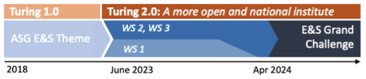
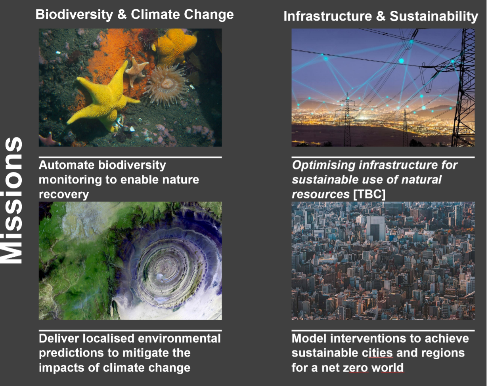

Environment & Sustainability Grand Challenge - Overview#
The purpose of this handbook is to set the precedence for operational delivery of the Environment & Sustainability Grand Challenge (E&SGC) in alignment with the coordinating E&SGC director and leadership team. Noting, the content within this document and associated references do not override any Turing policies/procedures, contractual obligations and ways of working.
With the release of the Turing’s new 10-year strategy (Turing 2.0), the institute is poised to take advantage of the emerging and growing E&S community, to action ASG whitepaper recommendations and help focus a diverse multi-disciplinary community around a common challenge. The new Turing E&SGC will align to the UKRI AI Statement of Intent ‘Addressing key applications and challenges: environment and energy’, the Delivery Plans of EPSRC ‘discovery, development and deployment of solutions to tackle climate change, enhance sustainability’, the Natural Environment Research Council (NERC) ‘improvements in sensing technology combined with AI’, and Biotechnology and Biological Sciences Research Council (BBSRC) ‘drive development of novel and disruptive ideas, technologies and approaches’, and the Met Office’s Research and Innovation Strategy ‘transform the weather and climate National Capability by deploying transformative technologies, such as Digital Twins, to bring together observations, simulation, and AI’. The proposed programme will address gaps in E&S and deliver cutting-edge research and innovation (R&I) with UK’s leading environmental labs, while significantly expanding on the above-mentioned existing research priorities and complementing EPSRC’s new funding allocation to AI Hubs (focussing on UK Universities to develop AI for science and engineering, and AI for mathematical and computational foundations), through a symbiotic research agenda that will build capacity in UK academia to tackle the dynamic needs of the E&S agenda.

Year 1 of the programme represents a seminal and ambitious research and innovation (R&I) programme (June 2023 to April 2024) that will lay the critical groundwork for subsequent success. The programme consists of three workstreams (WS, Fig. 1). WS1 will map the ecosystem, identify stakeholders and collaborate to refine the scope of a national five-year roadmap for the Environment and Sustainability Grand Challenge, as set out in the Turing 2.0 strategy as one of three challenge areas that the Turing will commit to for the coming decade.
Synergies will be created with existing Turing capabilities such as TRIC-DT. WS1 kickstarts the programme by clarifying the underpinning research requirements in AI and data science that best represents the UK’s capabilities and strengths, captured through the research missions (M1-M4). By, April 2024 Turing will launch the E&S GC and accompanying missions. In WS2 we will ramp-up R&I activity by building on the success of ASG through five low-risk cross-disciplinary activities that address the recommendations from the final ASG whitepaper, Tackling climate change with data science and AI With WS1 stakeholder consultation concluded by April 2024, WS2 activities underway and the E&S Missions further refined, we will set the foundations for expansion and ambitious R&I delivery from Year 2 onwards.
In Year 1 the Turing will establish the strategic leadership and community foundations in close partnership with digital leaders within national environmental labs (including programme’s Co-Is). By combining human expertise with algorithms, machine learning, data science, and high-performance computing, we can harness the potential of AI to provide the essential information required for improved evidence-based decision-making and augmentation of solution design.
